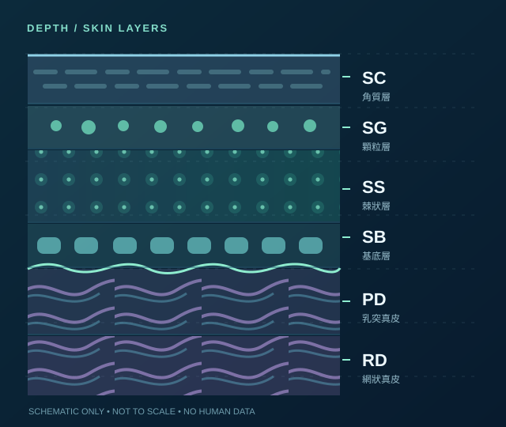

OPEN BIOMEDICAL OPTICS NOTEBOOK
看見皮膚的每一層
理解光如何成像。
從皮膚組織結構、反射式共軛焦顯微術，到二倍頻與三倍頻影像，再延伸至 AI 重建。用清晰的圖解，把生醫光學知識串成一張地圖。
11主題文章
03影像模態
06皮膚觀察層

01 / 06概念示意・非比例影像
START EXPLORING
三個入口，建立完整理解
RCM 反射 / 散射SHG 膠原結構THG 介面差異
示意圖僅說明不同對比機制，並非真實顯微影像或量測結果。
CURATED ARTICLES
精選入門文章
BUILT TO GROW
不只是一個網站，而是一套可持續擴充的知識系統。
所有文章遵守同一份 AGENTS.md 規範；未來新增新模態、新層次或新技術，只要依照固定格式填入資料即可。